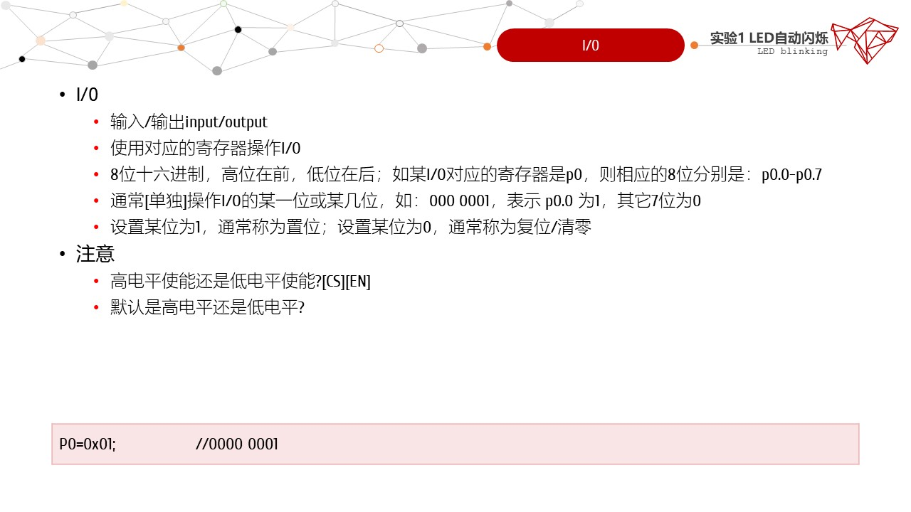
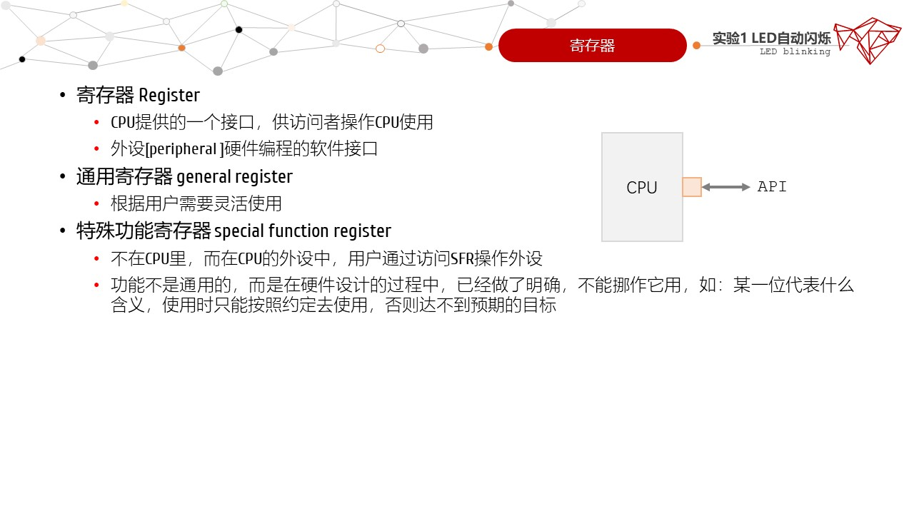
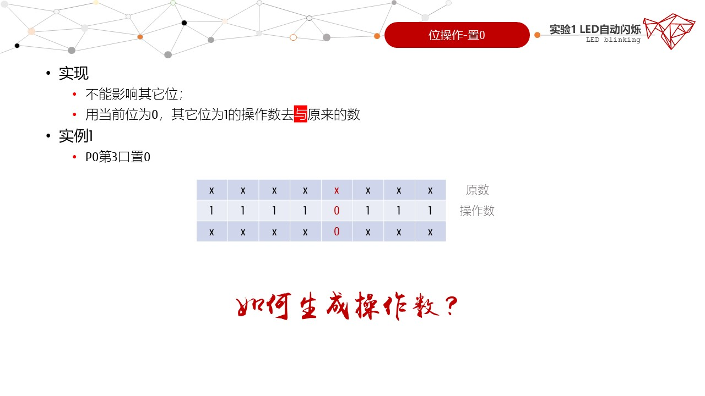
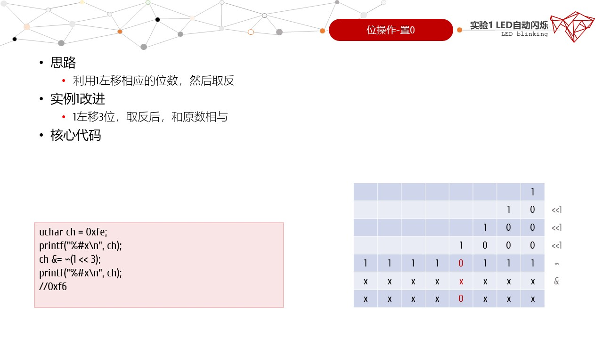
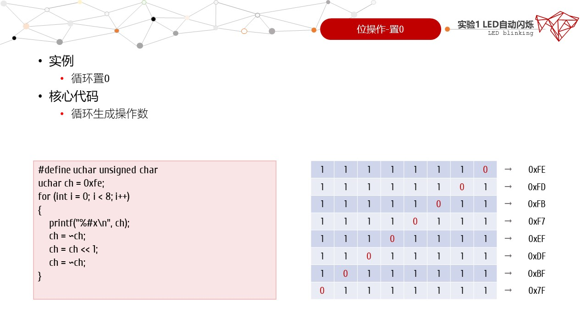
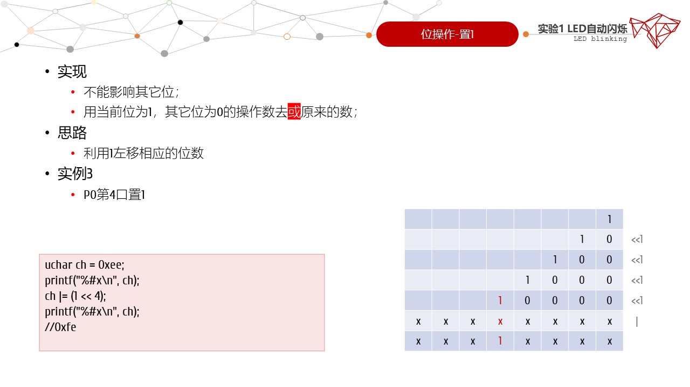
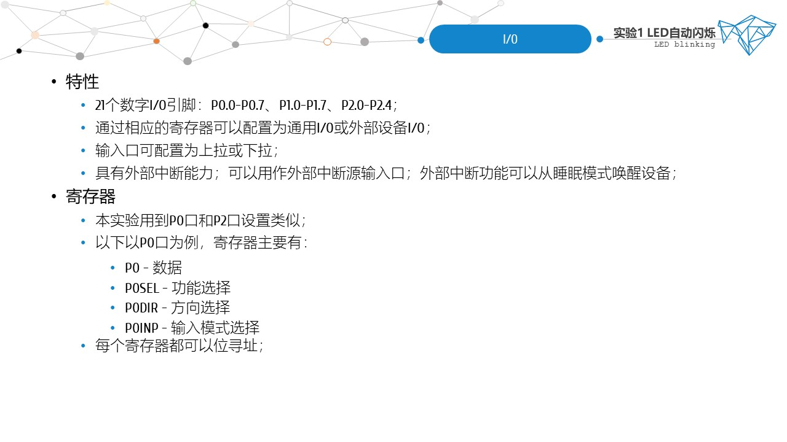
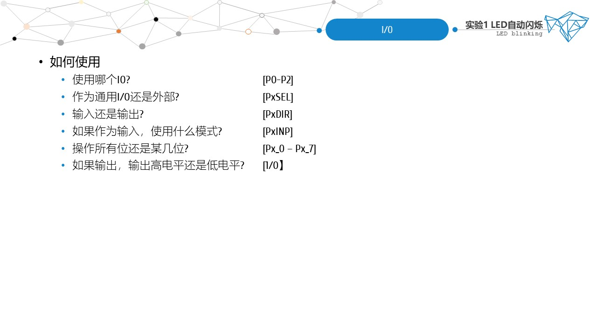
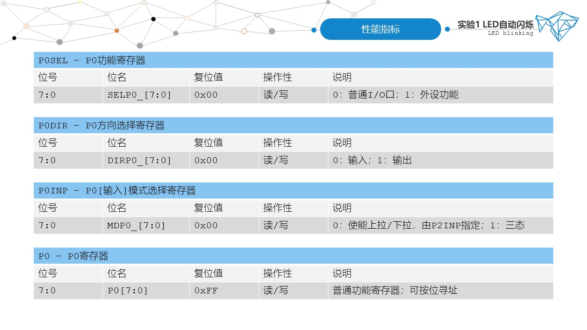
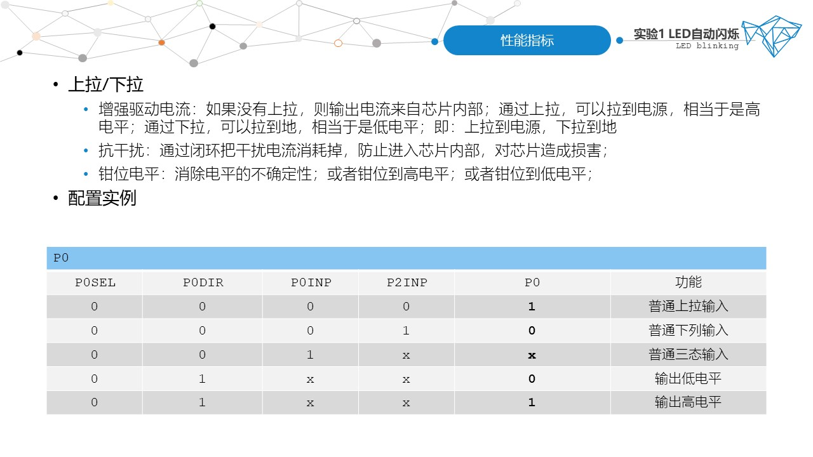

- 实操部分
- 实验目的
- 1. 掌握CC2530的IO口寄存器设置；
- 2. 掌握LED自动闪烁的编程方法；
- 实验内容
- 在IAR集成开发环境中编写LED自动闪烁程序，配合节点板实现LED的自动闪烁；
- 预备知识
- 1. 了解C语言的基本知识；
- 2. 了解IAR中编写和调试程序的方法；
- 设备需求
- 硬件：PC机、CC Debugger仿真器、通用调试母板、mini USB线；
- 软件：IAR开发环境；以及相应的驱动；
- 实验现象
- 节点板右下角两个绿色LED灯循环闪烁
- 实验阶段
- 体验阶段：利用提供的源码，完成编译、烧写、执行，观察实验现象；
- 提升阶段：请使用宏和函数优化代码，使其符合模块化开发，同时可读性更强；
- 实验报告
- 1. 根据实操部分的内容，完成点灯项目；
- 2. 以纸质的形式提交实验报告；
- 3. 论文格式请参照范文[点击下载]。